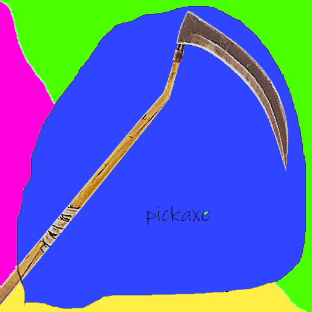

w a s and d game so thats whats you use so if you want to play u have to use w a s and d or if you want
you can go into settings and change it to any thing you want and if you want to play you have to have a acount wich
you can get for free and you need a mouse and if you want to talk to others get a head set or a headphone and a mic
and if you want to know how to build go into my building section and now if you want to buy a skin you need a credit card
or a vesa gift card or other credit card gifts card or paypal acount then go to the store wich is located next to item shop.
everybody has to know how to swing your pickaxe because if u dont you wont know how fight or harvest
press your left click on your mouse first of all dont buy a acount you will get scammed
if you want to buy a acount do it to someone you know.Q to scroll through the building components,
but even that is too slow for Fortnite's chaotic building battles.
Remap the keys based on comfort and component priority.
You'll need walls and ramps at the ready most of the time,
so consider mapping one to Q and another to F (or E, if you're willing to learn a new 'use' key).
Use Z, X, and C or any free mouse buttons for the remaining components, like floors, traps, and pyramids.
Give yourself a few matches to get comfortable,
but you should be able to switch to specific building components as quickly as any weapon.
Experiment until you find a layout that feels natural.